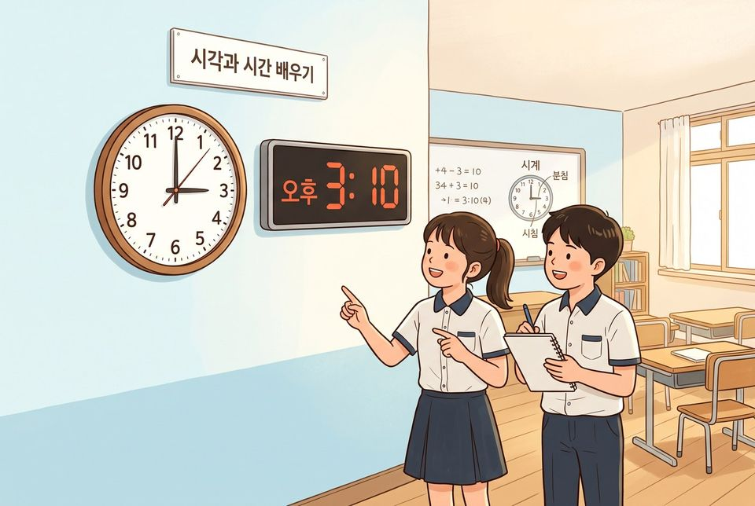
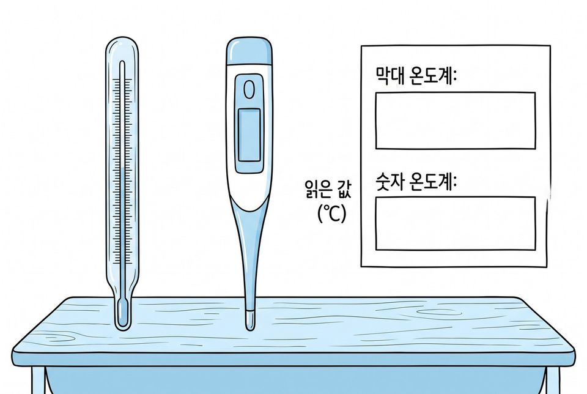
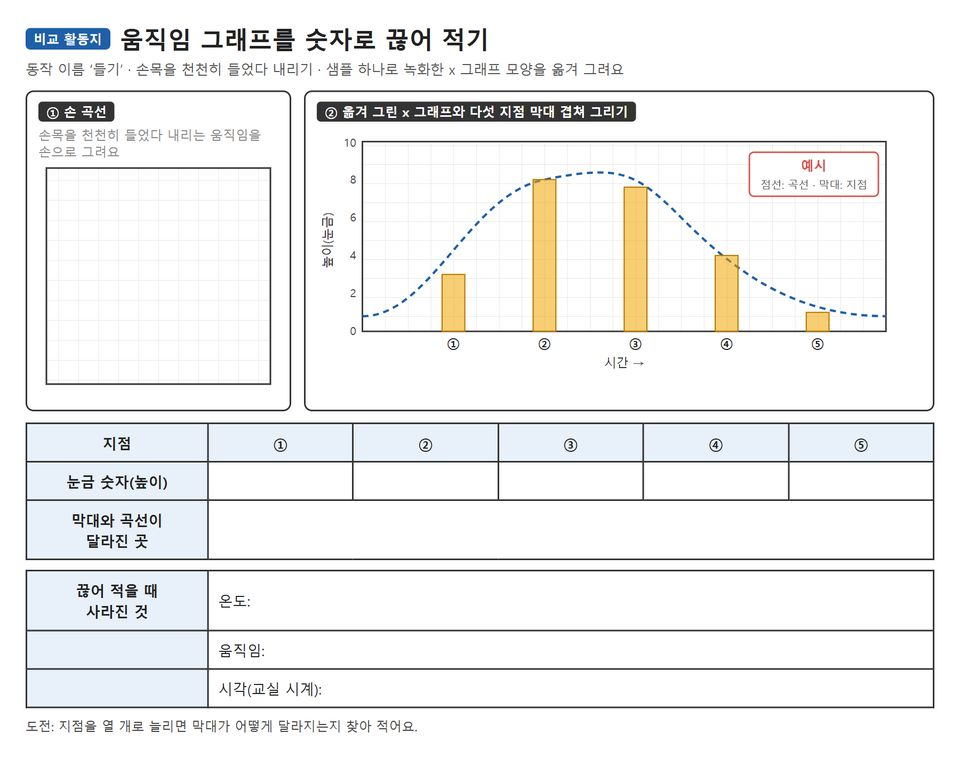

온도계와 마이크로비트 센서로 이어지는 값을 숫자로 끊어 적고 데이터 유형 가르기
학습 문제 — 같은 것을 이어지는 값과 끊어 적은 값으로 나타내고, 숫자로 바꾸어 봅시다.
개요
| 성취기준 | [6실인공지능04-01] 온도·움직임처럼 이어지며 변하는 값이 숫자 데이터로 바뀌는 과정을 알고, 인공지능에 쓰이는 데이터의 종류(수·글·이미지·소리)를 구분한다. 연계 성취기준: [6실05-04], [06자율-5] |
|---|---|
| 핵심 역량 | 지식정보처리 역량, 창의적 사고 역량 |
| 핵심 기능 | ① 데이터 간에 공통되는 유형이나 형태 탐색하기 ② 온도계 눈금과 숫자 표시로 같은 값 나타내기 ③ 센서 값을 정해진 간격의 숫자로 끊어 기록하기 ④ 기록 간격에 따라 놓치는 변화 설명하기 ⑤ 데이터를 수·글·이미지·소리로 가르기 |
| 가치 태도 | 생활 속의 여러 가지 데이터가 갖는 의미를 파악하는 자세 끊어 적을 때 무엇이 사라지는지 끝까지 따져 보려는 자세 |
교수학습 활동
17차시 도입 동기 유발 · 학습문제 제시17차시 전개 활동1. 온도계 눈금과 숫자 표시 견주기 · 활동2. 움직임 그래프를 숫자로 끊어 적기18차시 전개 활동3. 센서 기록표로 기록 간격 바꾸어 보기 · 활동4. 데이터 카드 유형 가르고 숫자 찾기18차시 정리 배운 내용 정리 · 다음 차시 예고
17차시도입8분
동기 유발
- 바늘 시계와 숫자 시계가 시각을 보여 주는 방법 견주기
- 바늘 시계에서 3시 7분과 3시 8분 사이가 어떻게 나타나는지 살피기
- 과학 선생님의 의뢰: 우리 도우미가 알아듣게 세상을 숫자로 바꾸는 ‘데이터 번역가’ 되기

학습문제 제시
- 같은 것을 이어지는 값과 끊어 적은 값으로 나타내고, 숫자로 바꾸어 봅시다.
자료비교 활동지
자료[도입] 상황 그림
유의점오래된 것과 새것의 차이로 답하면 값을 나타내는 방식으로 되묻는다.
유의점숫자로 나오는지만 보고 재는 원리를 다 설명하지 않는다.
유의점활동지 배부와 자리 정돈 시간을 도입 시간에 포함한다.
17차시전개32분
활동1. 온도계 눈금과 숫자 표시 견주기 (14분)
- 눈금 온도계와 숫자 온도계를 같은 자리에 나란히 놓기
- 두 온도계에서 읽은 값을 각각 적기
- 눈금 온도계의 빨간 기둥 끝을 그려 넣기
- 읽은 온도를 1도 단위와 0.5도 단위로 끊어 각각 적기
- 눈금 사이에도 온도가 끊기지 않고 이어짐을 확인하기
- 이어지는 값은 아날로그, 단계로 끊은 값은 디지털로 정리하기

활동2. 움직임 그래프를 숫자로 끊어 적기 (18분)
- 손목을 천천히 들었다 내리는 움직임을 손 곡선으로 그리기
- 모둠 마이크로비트를 createai.microbit.org에 연결하기
- 흔들고 기울이며 x·y·z 그래프가 바뀌는 모습 살피기
- 그래프는 센서가 보낸 움직임 숫자를 이어 그린 것임을 알기
- 동작 ‘들기’를 샘플 하나로 녹화해 x 그래프를 눈금 칸에 옮기기
- 다섯 지점 높이를 숫자로 적어 막대로 그리고 손 곡선과 겹쳐 보기
- 도전: 지점을 열 개로 늘려 막대가 어떻게 달라지는지 찾기

준비물연필, 눈금 온도계와 숫자 온도계, 마이크로비트 V2(모둠당 1대), USB 케이블, 배터리 팩, 학생 기기
자료비교 활동지, [활동1] 온도계 관찰 자리 그림
유의점온도계는 교사가 미리 같은 자리에 두고, 손으로 감싸거나 입김을 불어 값을 바꾸지 않게 한다.
유의점마이크로비트를 흔들 때 손목 밴드나 끈을 감아 떨어뜨리지 않게 한다.
유의점블루투스 연결이 안 되면 교사 화면의 그래프를 함께 보고 옮겨 그린다.
유의점이 차시는 그래프를 보고 녹화하는 데까지만 하고, 학습시키는 일은 손 씻기 코치 차시에서 한다.
유의점느린 학습자는 다섯 지점이 표시된 도움 카드를 쓰고, 빠른 학습자는 도전 과제를 한다.
18차시전개33분
활동3. 센서 기록표로 기록 간격 바꾸어 보기 (20분)
- MakeCode 뼈대 코드 살피기: 버튼 A를 누르면 빛 세기 값 보여 주기
- 한 명이 마이크로비트를 들고 창가에서 교실 안쪽으로 천천히 걷기
- 나머지는 10초마다 A를 눌러 나온 값을 기록표에 적기
- 같은 길을 30초마다 적은 기록과 나란히 막대로 그리기
- 간격이 넓을 때 놓친 변화를 찾아 표시하기
- 센서는 이어지는 바깥 세상을 정해진 간격의 숫자로 바꿈을 정리하기
- 도전: 온도 센서로 바꾸어 같은 길을 기록해 보기
활동4. 데이터 카드 유형 가르고 숫자 찾기 (13분)
- 데이터 카드 여덟 장 살피기: 기온 기록, 쪽지 글, 손 사진, 박수 소리 등
- 수·글·이미지·소리 네 무리로 카드 가르기
- 카드마다 어떤 숫자로 바뀌어 저장되는지 한 줄씩 적기
- 9~10차시의 그림 숫자표를 떠올려 이미지 카드에 이어 보기
- 뒤 차시 손 씻기 코치가 배울 데이터가 어느 유형인지 쓰기
준비물마이크로비트 V2(모둠당 1대), USB 케이블, 배터리 팩, 학생 기기, 데이터 카드 8장(모둠별)
자료센서 기록표, MakeCode 뼈대 코드, 데이터 유형 가르기 판
유의점수업 전에 MakeCode 블록 이름을 확인하고 뼈대 코드를 모든 기기에 미리 넣어 둔다.
유의점걷는 학생은 천천히 움직이고, 나머지는 시간과 값을 나누어 적는다.
유의점그림·소리를 숫자로 바꾸는 방법은 9~10차시에서 배운 것을 떠올리는 데 그치고 되풀이하지 않는다.
유의점느린 학습자는 칸이 그려진 기록표를 쓰고, 빠른 학습자는 도전 과제를 한다.
18차시정리7분
배운 내용 정리 (5분)
- 아날로그와 디지털을 값을 나타내는 방식으로 한 문장씩 쓰기
- 기록 간격을 넓혔을 때 놓친 것을 자기 기록에서 하나 들어 쓰기
- 센서 값이 인공지능이 배우는 데이터가 되는 까닭 말하기
다음 차시 예고 (2분)
- 안전 담당 선생님의 다음 의뢰 알기: 우리 반 자료를 나누고 AI에게도 나누게 하기
- 활동지 두 장을 붙여 정리해 제출하기
자료센서 기록표, 데이터 유형 가르기 판
유의점아날로그와 디지털을 옛것과 새것으로 정리하지 않는다.
유의점쓰기가 어려운 학생은 구술로 확인하고 지원한 사실을 적는다.
유의점결석이나 미제출로 확인하지 못한 학생은 보충 확인 시점을 정한다.
평가 계획
인공지능 소양 · 데이터를 나타내는 방식의 이해
온도계와 마이크로비트 센서로 같은 대상을 이어지는 값과 끊어 적은 값으로 나타내고, 기록 간격에 따른 차이와 데이터 유형을 설명할 수 있는가?
| 수준 | 평가 기준 |
|---|---|
| 매우 잘함 | 두 온도계의 값을 적고 1도·0.5도 단위로 끊어 적으며 아날로그와 디지털을 값을 나타내는 방식으로 설명한다. 움직임 그래프의 다섯 숫자를 손 곡선과 겹쳐 견주고, 센서 값을 두 간격으로 기록해 넓은 간격에서 놓친 변화를 자기 기록을 들어 설명한다. 데이터 카드를 네 유형으로 가르고 카드마다 어떤 숫자로 바뀌는지 쓴다. |
| 잘함 | 두 방식으로 기록하고 움직임 그래프의 숫자를 적으며, 두 간격의 센서 기록에서 놓친 변화를 한 가지 이상 찾는다. 데이터 카드를 대부분 바르게 가른다. |
| 보통 | 온도계를 읽어 두 방식으로 기록하지만 차이를 ‘다르다’는 말로만 설명한다. 또는 센서 기록이나 데이터 카드 가르기 가운데 일부만 마친다. |
| 노력요함 | 교사가 기록 칸과 간격을 하나씩 짚어 주고 예를 보여 준 뒤에도, 같은 대상을 두 방식으로 나타내거나 기록 간격에 따른 차이를 설명하는 데 어려움이 있다. |
| 미관찰 | 결석이나 미제출로 확인하지 못한 경우. 낮은 성취로 적지 않고 따로 기록한 뒤 보충 확인 시점을 정한다. |
평가 방법 활동지 분석 · 구술 확인 · 관찰
연동 도구·링크
과정안에 나오는 도구가 저절로 걸립니다. 수업 전에 학교망에서 열리는지, 블록·메뉴 이름이 바뀌지 않았는지 확인하세요.
MakeCode (micro:bit) ↗마이크로비트 블록 코딩·시뮬레이터·무선(라디오)계정: 필요 없음라디오 블록 설명 ↗MakeCode (micro:bit) 안내마이크로비트 V2 ↗LED·버튼·가속도·소리 센서, 무선 통신계정: 필요 없음micro:bit CreateAI ↗움직임 데이터로 동작 모델 학습·시험, 움직임 그래프계정: 필요 없음(크롬·엣지)CreateAI 사용 안내 ↗micro:bit CreateAI 안내
내 수업 링크
학급 패들렛, 엔트리 작품, 활동지 주소처럼 이 차시에 쓸 링크를 걸어 둡니다. 이 브라우저에만 저장되고 밖으로 보내지 않습니다. 학생 이름이 든 주소는 넣지 마세요.